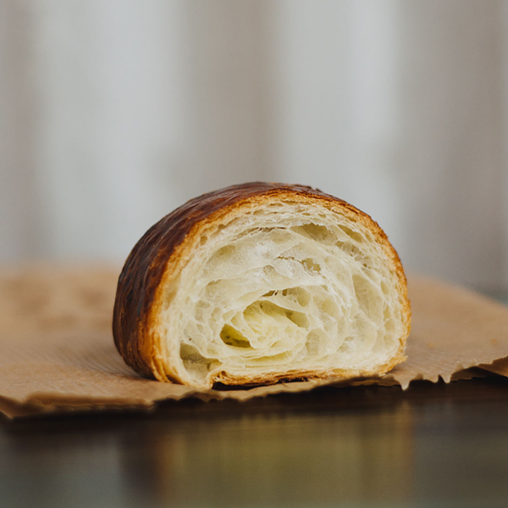
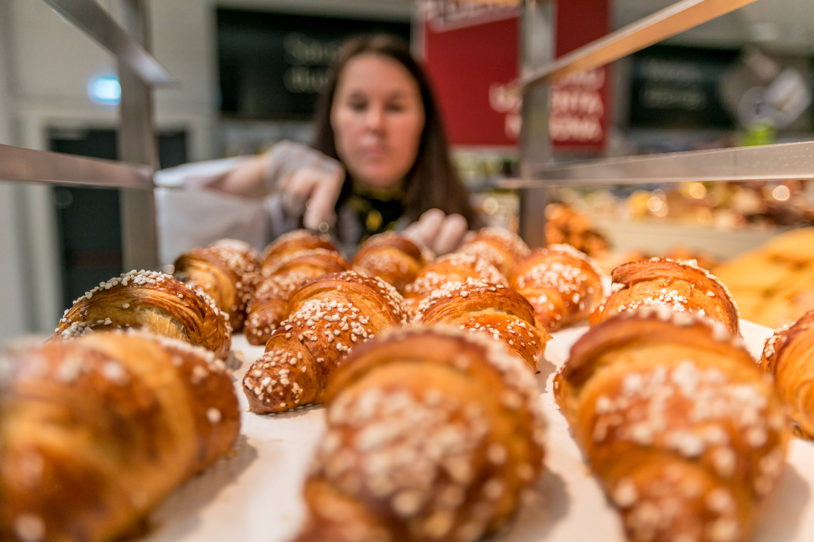

Prancūziškų ragelių kruasanų receptas | Jokūbo receptai
2020.10.29 10:59
Receptai Straipsniai Sudėtinės dalys Maisto priedai
Ketvirtadienio Receptas
Šventiniai patiekalai
Vasaros patiekalai Gimtadinio patiekalai Kalėdų patiekalai Užgavėnių patiekalai Velykų patiekalaiReceptai pagal tipą
Alkoholiniai gėrimai Antrieji patiekalai Apkepai Blynai Desertai Padažai, kremai Pyragai ir kepiniai Receptai žaliavalgiams Saldumynai Salotos Sriubos Troškiniai UžkandžiaiIš ko gaminama?
Avienos patiekalai Bulvių patiekalai Daržovių patiekalai Grybų patiekalai Jautienos patiekalai Kiaulienos patiekalai Kiaušinių patiekalai Miltų ir kruopų patiekalai Paukštienos patiekalai Sūrio patiekalai Vaisių ir uogų patiekalai Žuvies patiekalaiGaminimo būdas
Keptuvėje Maišyti Orkaitėje Troškinti VirtiŠalies virtuvė
Azijietiški patiekalai Ispaniški patiekalai Itališki patiekalai Kiniški patiekalai Lietuviški patiekalai Prancūziški patiekalai Pradžia › Prancūziškų ragelių kruasanų receptasPrancūziškų ragelių kruasanų receptas
Šiandieną gaminame traškius sluoksniuotos tešlos sviestinius pyragėlius - kruasanus. Tešlą gaminsime patys, todėl nedelsdami pradėkime! Jokūbas 2015-02-16 4.71 Išbandė 7 Loading ... 240 min. +Sudėtinės dalys:
Miltai , 250 g Pienas , 70 ml Vanduo , 70 ml Cukrus , 2 v. šaukštai Sausos mielės , 5 g Sviestas , 160 g Druska , žiupsnelis Kiaušinis , 1 vnt.Gaminimas:
Sviestiniai rageliai traškia plutele, kurių kilmės nepasidalina Prancūzija, Austrija ir kitos Europos šalys Kad būtų paprasčiau, tegul vadinsime, kad šie rageliai yra kilę iš Prancūzijos. Gaminant ragelius prireiks šiek tiek kantrybės, taip pat ir laiko, kadangi tešlą reikės ir pašaldyti, ir palikti iškilti. Pradėkime!
Dubenyje sumaišome birius ingredientus: miltus, keletą šaukštų cukraus, sausas mieles, žiupsnelį druskos. Įdedame 20 g (1.5 v. šaukštą) kambario temperatūros sviesto, supilame pieną ir vandenį, tešlą gerai išmaišome ir išminkome rankomis (2-3 min.). Iš tešlos suformuojame suplotą blyną, supakuojame į maistinę plėvelę ir dedame į šaldytuvą bent dviems valandoms. Čia svarbu ilgai neužgaišti su tešla, kuo daugiau leisime jai iškilti, tuo sunkiau vėliau bus su ja dirbti (perdengiant su sviestu).
Tuo tarpu 140 g sviesto dedame tarp sviestinio popieriaus lakštų, pakočiojame iki vientiso blyno (geriausia dar šaltą sviestą susipjaustyti 4 mm storio riekėmis ir sudėjus vieną prie kitos suformuoti kvadratinį lakštą // arba sviestą sudėti į kvadratinį užtraukiamą šaldymo maišelį ir per jį iškočioti). Sviesto lakštą taip pat dedame į šaldytuvą, kad būtų tokios pat temperatūros kaip ir kruasanų tešla.
Išimame tešlą iš šaldytuvo, pakočiojame taip, kad galėtume suvynioti sviesto lakštą iš abiejų pusių (galima iškočioti dvigubai didesnį ir aplenkti sviesto lakštą // taip pat galima padėjus sviesto lakštą į vidurį tešlos lakšto kampus užlankstyti į vidurį (kaip voko)). Iškočiojame į pailgą stačiakampį su kraštinių santykiu 1:3. Tuomet nuo ilgųjų kraštų lenkiame po vieną dalį į vidurį, kiek suplojame rankomis ir suvynioję į maistinę plėvelę dedame į šaldytuvą valandai.
Išėmus kruasanų tešlą iš šaldytuvo, dedame ją ant miltais pabarstyto stalviršio taip, kad prieš tai padarytos lenkimo linijos būtų iš kraštų, t.y. tarsi knygą. Iškočiojame vėl į pailgą stačiakampį santykiu 1:3 ir vėl užlenkiame kraštus ant vidurinės dalies. Pasukame tešlą 90 laipsnių (vėl kaip knygą priešais save) ir iškočiojame į pailgą stačiakampį lakštą (4 mm), supjaustome į trikampius ir juos dedame į šaldytuvą pusvalandžiui.
Išėmus, kiekvieno trikampio bukoje kraštinėje darome įpjovą (žr. nuotrauka Nr. 5) ir nuo jos pradedame vynioti kruasaną iki pat smailosios dalies (žr. nuotrauka Nr. 6). Taip suvyniotus kruasanus dedame ant kepimo formos, išklotos kepimo popieriumi (žr. nuotrauka Nr.7), aptepame kiaušinio plakiniu (pasūdytu žiupsneliu druskos) ir paliekame 20 min. kambario temperatūroje. Kadangi naudojome sausas mieles palikti ilgiau nereikia, neišsipūs. Aptepame kruasanus kiaušinio plakiniu dar kartą ir dedame į iki 190°C įkaitintą orkaitę 16-21 min., kol rageliai dailiai įrus.
Ką gi, sviestiniai rageliai jau iškepė. Skanaujame kruasanus šiltus su pienu arba pravėsusius su kava ar arbata. Gero apetito!
Susiję receptai Margas keksas su kakava Sausainiai su marcipanais Plikytos tešlos eklerai su įdaru Atsiliepimai . | 10-30-2017 20:10
Skaniausi!!!!Dar gaminsiuu
Palikite atsiliepimą arba pasiūlymą Cancel reply
Reklama
Savaitės klausimas
Loading ...Receptai tavo Facebook!
Pasidalink receptu
Greita svorių skaičiuoklė
-------------------------------------------TURINYS
Receptai Straipsniai Sudėtinės dalys Maisto priedaiAPIE
Apie jokuboreceptai.lt Taisyklės © Jokūbo receptai | 2020- MANTINGA | Produktai
- Naminiai kruasanai - DELFI Gyvenimas
- Sviestiniai rageliai (kruasanai) paprasčiau | NUOTRAUKOS ...
- Ar vartotinas žodis „kruasanas“? - VLKK
- Kruasanai - Saldu Saldu
- kruasanas Archives - Atrask Skonį
- Kruasanas su kiaulienos kumpeliu - Atrask Skonį
- Kruasanas - Crustum
- Kruasanai su šokoladu (iš šaldytos sluoksniuotos bemielės ...
- Jo didenybė kruasanas: prancūzų numylėtinis, pavergęs ir ...
- MANTINGA | Produktai
Šiandieną gaminame traškius sluoksniuotos tešlos sviestinius pyragėlius - kruasanus. Tešlą gaminsime patys, todėl nedelsdami pradėkime!
- Naminiai kruasanai - DELFI Gyvenimas
Taip, vartotinas. Kruasanas (pranc.croissant), prancūziškas ragelis (Tarptautinių žodžių žodynas, Vilnius, 2013, p. 458).„Kalbos patarimuose. Kn. 4: Leksika ...
- Sviestiniai rageliai (kruasanai) paprasčiau | NUOTRAUKOS ...
Kaip ir sakiau – kruasanas, puodelis kavos, stiklainėlis mėgstamo džemo, gal dar mylima muzika ar netikėti saulės spinduliai už lango – ir tai bus skanios akimirkos, kurias dar ilgai norėsis nešiotis širdy. Nes maži dalykai yra dideli dalykai, nes skanios akimirkos kuria istorijas, nes naminiai kepiniai visada yra patys ...
- Ar vartotinas žodis „kruasanas“? - VLKK
„Šviežias kruasanas turi traškėti, o viduje turi matytis daugybė plonų sluoksnių. Ką tik iškeptas ir dar šiltas kruasanas yra nuostabaus skonio. Jame visuomet jausite lengvą sviesto skonį, jis bus purus, minkštas ir žavės savo meistriška sluoksnių struktūra“, – dalijosi ji.
- Kruasanai - Saldu Saldu
Virimo kruasanas su sūriu: 1 žingsnis: kepkite tešlą. Pirmiausia reikia paruošti mieles, kurios bus kruasanų testo pagrindas. Paimkite 50 ml anksčiau virinto ir atvėsinto vandens. Supilkite skystį į gilią plokštelę ir įpilkite į jį šaukštelį granuliuoto cukraus ir mielių. Palikite juos 10–15 minučių kambario temperatūroje.
- kruasanas Archives - Atrask Skonį
DELFI - Lengvi ir gardūs – tarsi mylimojo bučinys – prancūziški raguoliai gana paprastai pagaminami ir namuose. Ir visai nereikia kas kartą jų užsimanius vykti į Prancūziją.
- Kruasanas su kiaulienos kumpeliu - Atrask Skonį
Kruasanas su mocarela 2,6 € / vnt. Kruasanas su rūkyta lašiša 2,4 € / vnt. Meniu Desertai Užkandžiai Galerija. Paslaugos Individualūs užsakymai Pristatymas Įrankių, indų nuoma. Saldu Saldu Apie mus Dažniausiai užduodami klausimai Idėjos. Susisiekite Tel. +370 (605) 60 115
- Kruasanas - Crustum
Kruasanas su karamele ir riešutais – atitinka naujus, sugriežtintus mokinių maitinimui keliamus reikalavimus Karamelė – niekad neatsibostanti klasika, ji lyg klasikos ikona, kurios skoniui atsispirti gali tik vienetai, ne veltui, tai vienas
- Kruasanai su šokoladu (iš šaldytos sluoksniuotos bemielės ...
Kruasanai | Video receptas - patiekalas, kurį nesunkiai pasigaminsite pagal šį receptą. Daug gerų, išbandytų receptų, kuriuos privalai išmėginti!
- Jo didenybė kruasanas: prancūzų numylėtinis, pavergęs ir ...
Kruasanas. 2,00 € su uogiene ir sviestu . PRADŽIAI. Marinuotos alyvuogės. 4,50 € Sezoninė sriuba. 4,00 € Matje silkė su švediška bulve, varškės ir burokėlių kremu. 7,50 € Ispaniškos menkės ir bulvių spurgytės. 5,90 € su sepijų rašalu ir ajoli majonezu .
Šiandieną gaminame traškius sluoksniuotos tešlos sviestinius pyragėlius - kruasanus. Tešlą gaminsime patys, todėl nedelsdami pradėkime!
Taip, vartotinas. Kruasanas (pranc.croissant), prancūziškas ragelis (Tarptautinių žodžių žodynas, Vilnius, 2013, p. 458).„Kalbos patarimuose. Kn. 4: Leksika ...
Kaip ir sakiau – kruasanas, puodelis kavos, stiklainėlis mėgstamo džemo, gal dar mylima muzika ar netikėti saulės spinduliai už lango – ir tai bus skanios akimirkos, kurias dar ilgai norėsis nešiotis širdy. Nes maži dalykai yra dideli dalykai, nes skanios akimirkos kuria istorijas, nes naminiai kepiniai visada yra patys ...
„Šviežias kruasanas turi traškėti, o viduje turi matytis daugybė plonų sluoksnių. Ką tik iškeptas ir dar šiltas kruasanas yra nuostabaus skonio. Jame visuomet jausite lengvą sviesto skonį, jis bus purus, minkštas ir žavės savo meistriška sluoksnių struktūra“, – dalijosi ji.
Virimo kruasanas su sūriu: 1 žingsnis: kepkite tešlą. Pirmiausia reikia paruošti mieles, kurios bus kruasanų testo pagrindas. Paimkite 50 ml anksčiau virinto ir atvėsinto vandens. Supilkite skystį į gilią plokštelę ir įpilkite į jį šaukštelį granuliuoto cukraus ir mielių. Palikite juos 10–15 minučių kambario temperatūroje.
DELFI - Lengvi ir gardūs – tarsi mylimojo bučinys – prancūziški raguoliai gana paprastai pagaminami ir namuose. Ir visai nereikia kas kartą jų užsimanius vykti į Prancūziją.
Kruasanas su mocarela 2,6 € / vnt. Kruasanas su rūkyta lašiša 2,4 € / vnt. Meniu Desertai Užkandžiai Galerija. Paslaugos Individualūs užsakymai Pristatymas Įrankių, indų nuoma. Saldu Saldu Apie mus Dažniausiai užduodami klausimai Idėjos. Susisiekite Tel. +370 (605) 60 115
Kruasanas su karamele ir riešutais – atitinka naujus, sugriežtintus mokinių maitinimui keliamus reikalavimus Karamelė – niekad neatsibostanti klasika, ji lyg klasikos ikona, kurios skoniui atsispirti gali tik vienetai, ne veltui, tai vienas
Kruasanai | Video receptas - patiekalas, kurį nesunkiai pasigaminsite pagal šį receptą. Daug gerų, išbandytų receptų, kuriuos privalai išmėginti!
Kruasanas. 2,00 € su uogiene ir sviestu . PRADŽIAI. Marinuotos alyvuogės. 4,50 € Sezoninė sriuba. 4,00 € Matje silkė su švediška bulve, varškės ir burokėlių kremu. 7,50 € Ispaniškos menkės ir bulvių spurgytės. 5,90 € su sepijų rašalu ir ajoli majonezu .
 